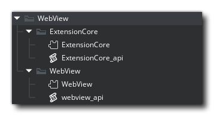

Setting Up
Import the WebView extension folder with all subfolders into your project. Make sure to include the ExtensionCore subdirectory and all of its contents.

Using in Fullscreen
The WebView can be used in fullscreen. This will work best when using borderless fullscreen window_enable_borderless_fullscreen:
window_enable_borderless_fullscreen();
window_set_fullscreen(true);
webview_open_url("https://www.google.com");
webview_set_borderless(true);